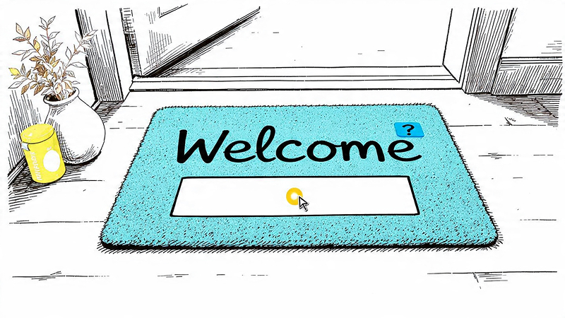
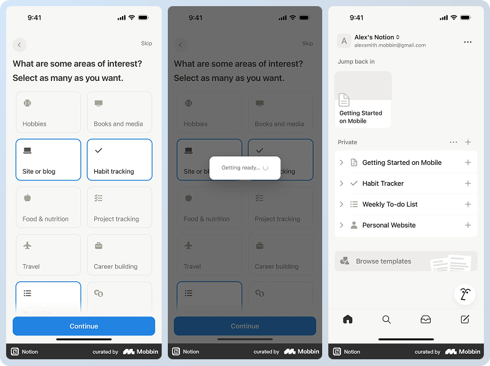
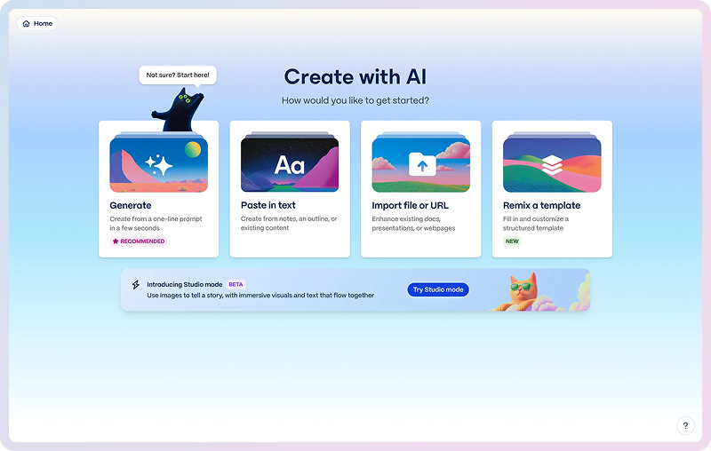
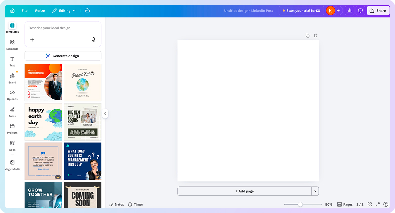
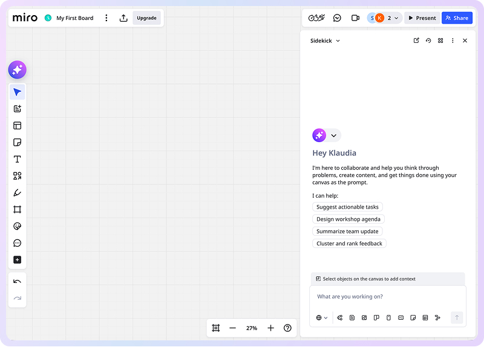
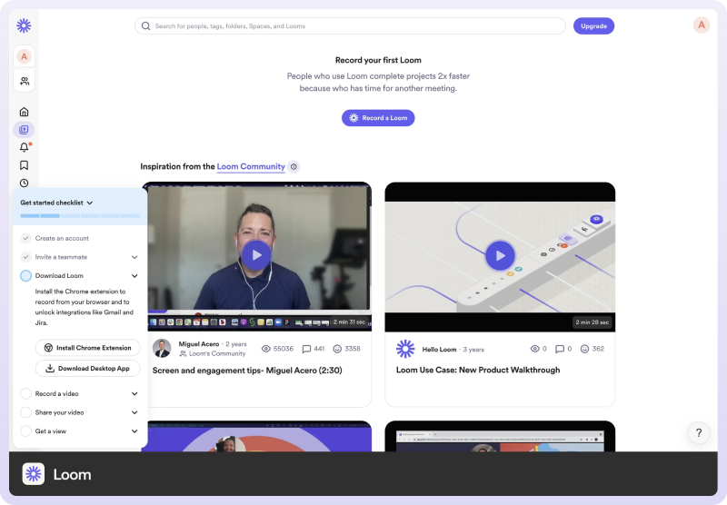

APR 03, 2026
ChatGPT Raised the Bar for SaaS Onboarding. Here's What Good Looks Like Now.
Summary: AI tools have raised the bar users bring to every product they sign up for. This article looks at what's shifting in SaaS onboarding, shows it through real product examples, and tells you what good hybrid onboarding looks like in practice. By the end you'll know what has changed, why it matters whether or not your product uses AI, and what the best products are doing to stay ahead.

Your customers aren't comparing your onboarding to your competitors'. They're comparing it to ChatGPT.
Recently I was testing several new AI tools - multiple sign-ups in a single day. Some of them were remarkable. I could start using a tool immediately by typing a prompt. No 'let's get you set up' sequence, no checklist, no tour. Just something relevant happening straight away.
Then I hit the opposite. I typed a prompt into a new wireframing AI tool and waited several minutes while the output generated. Instead of results, I got a message telling me to sign up first. Fine. I signed up. My results weren't there. Neither was my prompt. I typed it again, waited again, and got a generic error message.
In the space of a few hours, I'd experienced what good onboarding can feel like in 2026 - and what it can cost when it goes wrong. Users who hit that second experience don't write a support ticket. They close the tab and don't come back.
That contrast made me ask a question I hadn't thought about in a while: is this the new standard, and if so, what are the new rules? And what does it mean for SaaS products that don't use AI?
This article focuses on the first sign-up experience. From the moment someone lands on your product for the first time to the moment they get real value from it. That window is where most SaaS products either earn a long-term user or lose one permanently - often without knowing what has happened.
The 'one-size-fits-none' problem
Before looking at what's changing, it's worth looking at the approach that most SaaS products still use.
The standard flow - sign up, answer a few questions about your role and team size, see some tooltips on first login, and work through a setup checklist - wasn't wrong. It gave new users a clear starting point, and worked well enough when the alternative was a blank page with no guidance at all.
However, this often led to a 'one-size-fits-none' problem. The flow was organised around the product's features, not the customer's task. It answered 'here's how the product works' rather than 'here's how to solve the thing you came here to solve'. That distinction didn't matter much when users had nowhere better to go. But it matters a great deal now.
The most visible symptom is what teams describe as 'showing everything on first login.' The logic is understandable - give users a complete picture. The result tends to be the opposite. Someone arrives wanting to solve one or two specific things, faces a product tour of eight features, and loses the thread before they've solved anything.
On average, only 19.2% of new users complete a SaaS onboarding checklist. 75% abandon a product within week one if they can't find value quickly.
Source: Userpilot 2024; exec.com
What has changed: the reference point users bring with them
ChatGPT now has 900 million weekly active users. Perplexity, Claude, and Gemini have added hundreds of millions more. These tools are used daily by the same people who sign up for your product. They've become accustomed to software that responds to them immediately, understands what they're trying to do without being told, and produces something useful before they've invested significant effort.
When those users land in your product and face a five-step setup checklist, the gap is no longer invisible. They don't articulate it, but they feel it - they lose momentum and close the tab.
Your customers aren't comparing your onboarding to your competitors'. They're comparing it to ChatGPT.
If your flow follows the old formula, it isn't broken. But the bar it's being judged against has shifted significantly, and it will keep shifting as AI tools become more embedded in how people work.
The new patterns emerging from AI-native products are genuinely better than the old formula in specific ways. But each one comes with a failure mode that the old approach didn't have. Copying the surface pattern without understanding the logic underneath is where products run into trouble.
Pattern 1 - Prompt before page
The question sequence (What's your role? What's your team size? What are your goals?) is being replaced by a single open input. Tell us what you're trying to do. The product uses that answer to configure what the user sees next, rather than routing them into a pre-built flow.
The shift in logic matters more than the change in interface. The product is asking 'what do you need?' before showing what it has. That reversal - however small it looks on screen - changes the relationship between the user and the product from the first moment.
A blank prompt is a new kind of empty state. Users who don't yet have a mental model of what the product can do will stall in front of an open input field just as badly as they stalled in front of an empty screen. The blank canvas problem has been moved, not solved. Fix: example suggestion chips alongside the prompt that show users what's possible without forcing them to figure it out first.
Pattern 2 - First output, not first tour
The blank screen on first login is one of the oldest problems in SaaS onboarding. You've signed up, you're motivated, and then you face an empty canvas and no clear place to start. The emerging pattern replaces the blank screen with a first output - something already done that the user can react to rather than build from scratch.
Editing is cognitively easier than creating. A tangible output proves the product works before the user has invested effort. Both of these things matter enormously in the first session, when trust hasn't been established yet.
A wrong first output is worse than no output. When the product generates something that doesn't match what the user described, it signals 'this product doesn't understand me' faster and more forcefully than an empty screen would. An empty screen is neutral. A wrong first output is a trust problem. Speed to output is not the same as quality of output - the fix is asking better questions before generating anything.
Pattern 3 - Scaffolded capability space
The feature tour assumes users don't know how to use the product. The new challenge is different: users often understand the interface well enough but can't see what's possible with it. They don't know what to ask for, or what the product could do in their specific situation.
Scaffolding solves this by showing outcomes rather than listing features. Contextual suggestions, example interactions, and prompts tailored to what the user is working on all expand what users believe is possible - teaching through implication rather than instruction.
Hidden AI logic kills first-session trust. When the product makes suggestions or pre-configures settings without showing why, users feel out of control rather than helped. The action is visible; the reasoning is hidden. That gap erodes trust in exactly the moments you're trying to build it. Even a single line - 'we suggested this because...' - significantly improves user confidence in what they're seeing.
The risk that cuts across all three patterns
A user can reach a first output, complete a session, look like an activated user in your data - and still not be convinced the product will work for them.
I encountered this directly on a scheduling SaaS project. The activation metric had been defined as completing a specific task. Users were completing it. Return rates were still low. When we ran user interviews and looked at session recordings, we found the task didn't give users enough confidence that the product would handle their real workload. The metric looked fine. The outcome wasn't. We redefined the activation event around a more meaningful action and the correlation with 90-day retention improved significantly.
The lesson: speed to output is not the same as quality of conviction. The metric that catches this gap is return rate - not checklist completion.
What getting the balance right looks like - five products worth studying
None of the products below have abandoned structure. They've redirected it. Structure now serves the first output rather than explaining the product. That's what a hybrid approach means in practice: the guidance of the old formula combined with the intent of the new patterns.
Notion - personalised templates from one open question
Notion asks you to describe your workspace during setup, then uses your answer to recommend a specific selection of starting templates rather than showing you a generic library. The question sequence is still there - but the output is tailored. You know what happens next at every step, and what you see when you get there already reflects what you said.

Notion: setup question → personalised template recommendation. Source: Mobbin
The balance: structured enough that users aren't left wondering what to do, personalised enough that the first screen feels relevant rather than generic.
Gamma - the prompt becomes the product
Type what your presentation is about, and within seconds you're looking at a full first draft - real slides, real structure, real content. There's no tour, no feature list, no setup to complete. The first session produces something you can edit, share, or discard.

Gamma: prompt input → first presentation draft. Source: Mobbin
The balance: the prompt is guided enough (the interface is clear about what to enter) but open enough to handle any topic. The output is editable from the moment it appears - you're in control immediately.
Canva - AI starting point in a familiar structure
Canva's AI design tools let you describe what you need and generate a starting point immediately. But unlike a blank AI prompt, you land in a canvas environment you can navigate without any previous AI experience. The AI handles the first draft; the rest of the interface is familiar enough that no new mental model is required.

Canva: AI prompt → editable design starting point.
The balance: the starting point is AI-generated, but the editing experience is structured and conventional. Users who aren't confident with open-ended AI prompts still have a clear path forward.
Miro - context-aware suggestions with visible reasoning
Miro's AI Sidekick sees what's on your canvas and suggests relevant next steps based on the specific content of your session - not a generic tour of features. Critically, the reasoning is shown: not just 'the AI suggests this' but why it's relevant to what you're working on.

Miro: AI Sidekick with contextual reasoning shown
The balance: the suggestions feel intelligent rather than random because they're grounded in context. The reasoning makes the automation feel like a collaborator rather than a black box.
Loom - first output as the aha moment
Loom's onboarding is a structured four-step checklist: download, record, share, get a view. That's an old-pattern approach - sequential, guided, clear. What makes it worth studying is what the checklist is designed to achieve. Every step pushes you toward a first output (a real video) and then toward the aha moment: someone actually watching it.
The checklist doesn't explain features - it gets you to the moment where the product proves itself. This is the same logic that makes scheduling tools like Calendly work so well: structured setup → immediate first output → measurable aha moment. In Calendly's case that moment is someone booking a meeting through a live page. In Loom's, it's the first view notification. Both are unambiguous. Both are irreplaceable by any tour or tooltip.

Loom: checklist steps → first video recording → the aha moment (a real view). Source: Mobbin
It's honest to note a flaw: the checklist is non-skippable and temporarily hides parts of the full interface, which backfires for users who want to do something outside the prescribed flow. The intent is right - the execution has a known gap.
The thread connecting all five
None of these products ask users to understand the product before using it. They ask users to do one thing - then let the output make the case.
Structure is still present in every example. It's been redirected: it now serves the first output, rather than the feature explanation.
What this means for your product
The question isn't whether your onboarding needs a full rebuild. For most products it doesn't - and rebuilding rarely moves the needle as much as a targeted fix to the moment that matters the most.
The more useful question is: does your first session produce something, or explain something? If the honest answer is that new users leave session one having been shown the product rather than having used it, that's the gap worth closing.
The shift AI tools have driven isn't primarily technical. It's about expectation. Your customers have experienced what it feels like to be understood immediately by software. The products above haven't all used AI to achieve that - they've used better thinking about what the first session should deliver.
In the next article
I'll go deeper on your specific flow - a diagnostic checklist and the five numbers that tell you whether your onboarding is working, including the one metric most teams aren't tracking.
If this kind of thinking resonates with you, subscribe to get more insights like this straight to your inbox.